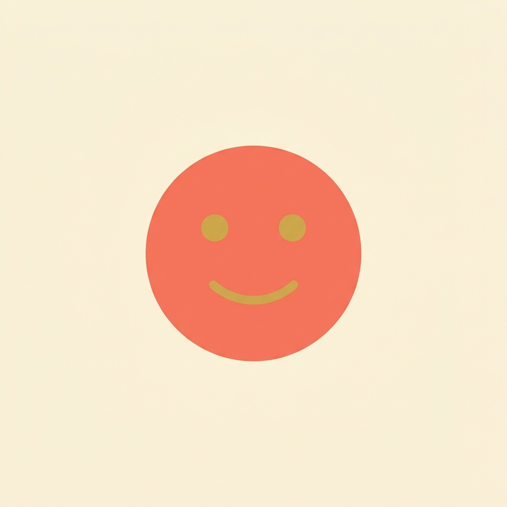

気分記録アプリ、続きませんでしたか？ 挫折の理由は意志の弱さではなく、「アプリを開いて、選んで、書く」という毎回の手間です。
ムードタップは、ホーム画面のウィジェットから1タップで気分を記録できるアプリです。アプリを開く必要はありません。気分がふと動いたその瞬間に、2秒で記録が終わります。積み重なった記録から、何があなたの気分を動かすのかに少しずつ気づいていけます。
基本機能（記録・グラフ・タグ）はすべて無料で、記録は無制限に使えます。
Pro（¥1,200・買い切り、月額課金なし）にすると、以下が使えます。
一度の購入でずっと使えます。月額のサブスクリプションはありません。
ご質問・ご要望・不具合報告は、お問い合わせフォームよりお寄せください。
Ever start a mood-journaling app and stop within two weeks? The problem was never willpower — it's the friction of opening the app, picking an entry, and writing something every single time.
MoodTap lets you log your mood in one tap from a home-screen widget — no need to open the app at all. The moment your mood shifts, logging it takes two seconds. Over time, the entries add up into a picture of what actually moves your mood.
The core app (logging, graph, tags) is free, with unlimited entries.
Pro (a one-time ¥1,200 purchase, no subscription) unlocks correlation insights (which tags move your mood), time-of-day and day-of-week rhythm analysis, the full-history graph, monthly reports, unlimited custom tags, and CSV export.
The app collects no personal data and works fully offline. See the Privacy Policy.